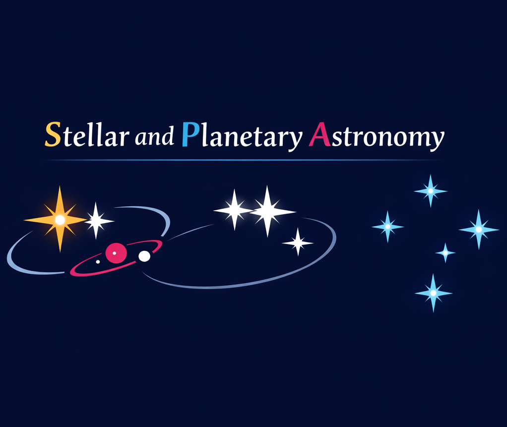
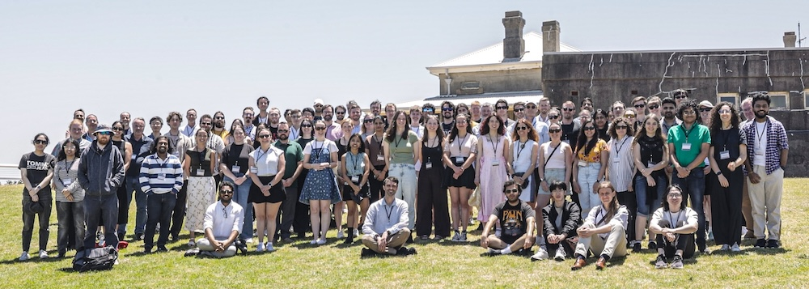
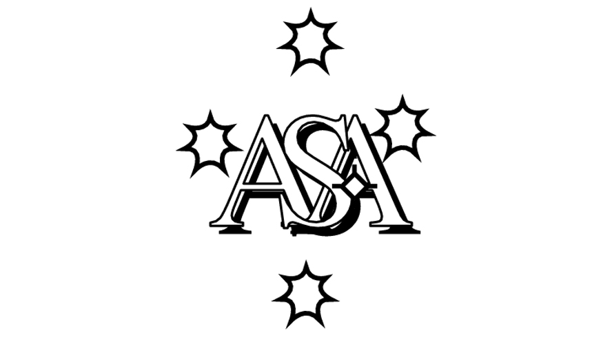

About the SPA Chapter
The ASA Joint Group on Stellar and Planetary astronomy is designed to coordinate national efforts to understand stars and planets and their co-evolution.
Connecting Australia's stellar and planetary science community
as a chapter of the Astronomical Society of Australia
The ASA Joint Group on Stellar and Planetary astronomy is designed to coordinate national efforts to understand stars and planets and their co-evolution.

| Coordinate stellar and planetary research in Australia and the region, across both theory and observation |
| Develop and strengthen links with planetary and space science communities in Australia and New Zealand, and their representative bodies |
| Organise annual workshops in stellar astronomy and exoplanets |
| Increase the visibility and connectedness of the stellar and planetary astronomy communities, both within Australia and internationally |
| Provide policy input and strategic direction to ASA, GSA, the National Committee for Astronomy, AAL and other bodies responsible for funding or coordinating stars and planets research in Australia and the region |
| Promote and grow the disciplines of stellar astronomy, exoplanets, planetary and space science within Australia |
Each year, the SPA Chapter organises the
Stars & Planets in… meeting, rotating between Australian
institutions and bringing together researchers across stellar and planetary
astrophysics.
Initially separate, the "Stars in..." and "Australian Exoplanet Workshop (AEW)" meetings have merged to highlight recent scientific advances, supports early-career
researchers, and strengthens national collaborations.
November 2025 Stars in Newcastle / Australian Exoplanet Workshop (Newcastle, NSW)

We encourage all astronomers to join SPA and help shape stellar and planetary astronomy in Australia: how we develop and coordinate our expertise, our infrastructure, and our research. There is no cost to join, although current membership in the Astronomical Society of Australia is required.
As a member you'll have a say in the future of our community. You will receive updates with information about planned meetings, funding opportunities, and recent publications or other relevant news.

We welcome suggestions for meetings, collaborations, and community initiatives.